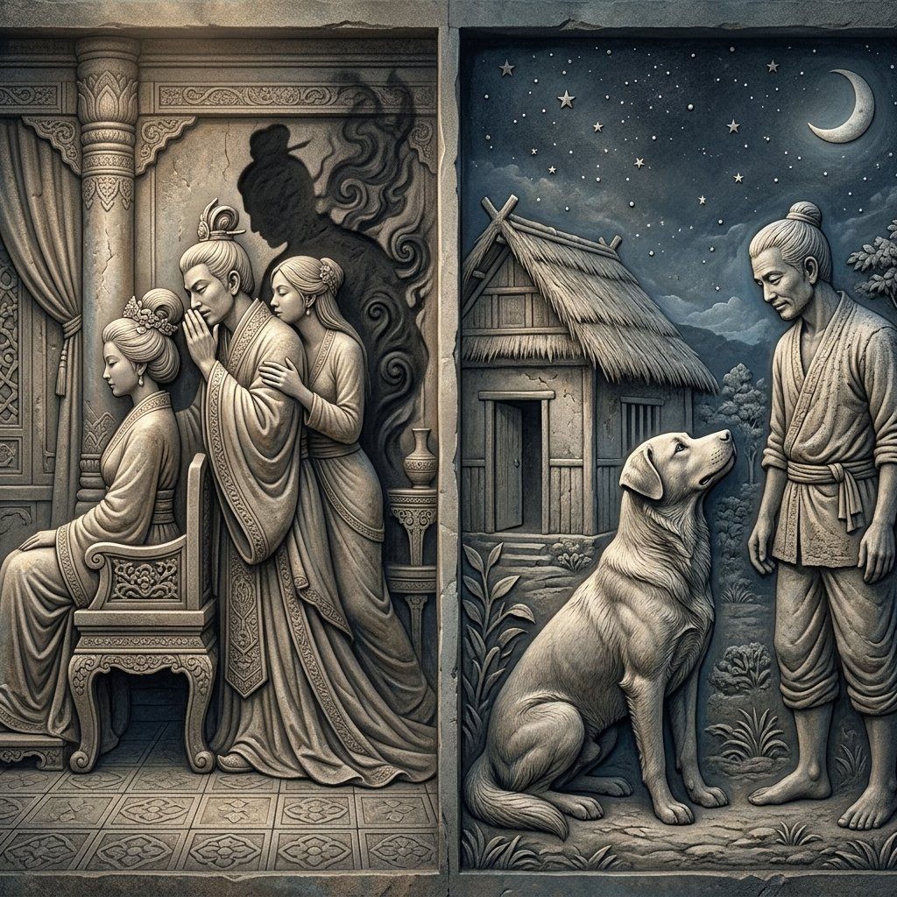
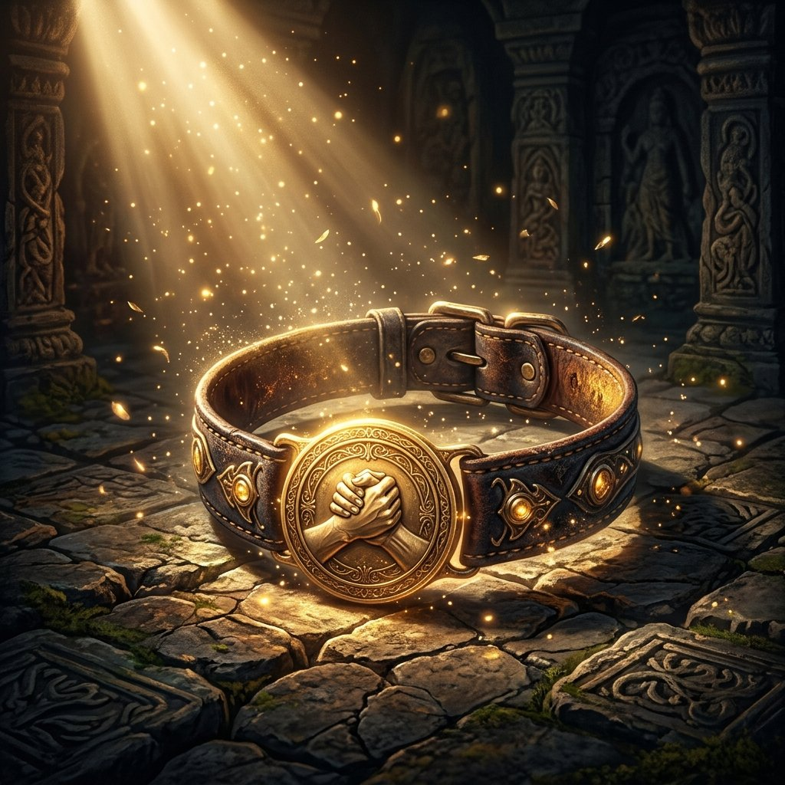
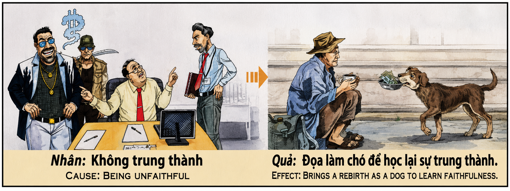

La Lección de la Lealtad y el Retorno de la Fe The Lesson of Loyalty and the Return of Faith La lezione della lealtà e il ritorno della fede 忠诚的教训与信念的回归 درس الولاء وعودة الإيمان Урок верности и возвращение веры Die Lektion der Loyalität und die Rückkehr des Glaubens La leçon de loyauté et le retour de la foi 忠誠の教えと信念の回帰 A Lição da Lealdade e o Retorno da Fé Bài Học Về Lòng Trung Thành Và Sự Trở Lại Của Niềm Tin
"La confianza es la moneda más sagrada del alma. Quien la traiciona mediante la infidelidad y el engaño siembra sombras de sospecha y desorden en el cosmos. La ley del karma, buscando restaurar el espejo roto de la lealtad, somete al transgresor a encarnar en el cuerpo del perro —el avatar por excelencia de la fidelidad incondicional—. Al servir con devoción pura y proteger a un amo a costa de su propia vida, el alma aprende en el silencio lo que no comprendió como humana: que la lealtad no es una cadena de sumisión, sino el honor más alto del amor." "Trust is the most sacred currency of the soul. He who betrays it through infidelity and deceit sows shadows of suspicion and disorder in the cosmos. The law of karma, seeking to restore the broken mirror of loyalty, subjects the transgressor to embody the dog—the ultimate avatar of unconditional fidelity. By serving with pure devotion and protecting a master at the cost of its own life, the soul learns in silence what it failed to understand as a human: that loyalty is not a chain of submission, but the highest honor of love." La lezione della lealtà e il ritorno della fede 忠诚的教训与信念的回归 درس الولاء وعودة الإيمان Урок верности и возвращение веры Die Lektion der Loyalität und die Rückkehr des Glaubens La leçon de loyauté et le retour de la foi 忠誠の教えと信念の回帰 A Lição da Lealdade e o Retorno da Fé Bài Học Về Lòng Trung Thành Và Sự Trở Lại Của Niềm Tin
La fidelidad no es una mera convención social ni una regla de convivencia humana: es un pacto de resonancia cósmica. Cuando dos almas sellan un pacto de lealtad, alinean sus campos energéticos en una frecuencia de absoluta integridad. La infidelidad y el engaño, por tanto, no constituyen únicamente una ofensa al corazón del compañero; representan una fractura violenta en el tejido de la confianza universal. El mentiroso y el traidor introducen voluntariamente la vibración del engaño, la sospecha y el caos en su entorno. Al burlarse de la fe depositada en ellos, fragmentan su propio ser espiritual, volviéndose incapaces de sostener la vibración de la lealtad.
Para sanar y reequilibrar este alma fragmentada, la implacable ley del karma opera un retorno pedagógico y transmutador. El cosmos coloca a la entidad en una vasija biológica diseñada específicamente para curar el egoísmo y restaurar el concepto de la lealtad incondicional: el perro. El perro no es simplemente un animal doméstico en la economía kármica del universo; es un canal viviente de amor puro, entrega y fidelidad inviolable. Al ser despojado de los privilegios del intelecto humano y del ego racionalizador de mentiras, el alma se ve forzada a experimentar la devoción en su estado más absoluto y primigenio.
En la forma de un can, el alma no tiene reputación que proteger, riquezas que codiciar, ni amantes secretos que perseguir. Su entera existencia terrenal se simplifica y se enfoca en un único y sagrado propósito: amar, servir y proteger a su amo con una lealtad que no conoce límites ni condiciones. El perro espera durante horas bajo la lluvia o la nieve, comparte el pan duro con alegría, y antepone la vida de su amo a la suya ante cualquier peligro. A través de este servicio devoto y silencioso, el alma enmienda y purifica la antigua soberbia del traidor.
La lección final de esta encarnación es de una belleza estremecedora. Quien una vez utilizó su libertad humana para engañar y romper promesas, ahora aprende la nobleza de cumplir un pacto en la más absoluta sumisión amorosa. Al final del ciclo, cuando el perro entrega su último suspiro habiendo salvado o consolado a su dueño, el karma registra la restauración del espejo roto. El alma asciende de nuevo a la forma humana, revestida para siempre con el escudo de la integridad y habiendo aprendido en el polvo del suelo lo que la opulencia y el orgullo le impidieron ver: que la lealtad es la expresión más divina y libre del amor.
Fidelity is not a mere social convention or a rule of human coexistence: it is a pact of cosmic resonance. When two souls seal a pact of loyalty, they align their energetic fields in a frequency of absolute integrity. Infidelity and deceit, therefore, do not only constitute an offense to the partner's heart; they represent a violent fracture in the fabric of universal trust. The liar and betrayer voluntarily introduce the vibration of deceit, suspicion, and chaos into their surroundings. By mocking the faith placed in them, they fragment their own spiritual being, becoming incapable of sustaining the vibration of loyalty.
To heal and rebalance this fragmented soul, the implacable law of karma operates a pedagogical and transmuting return. The cosmos places the entity in a biological vessel designed specifically to cure selfishness and restore the concept of unconditional loyalty: the dog. In the karmic economy of the universe, the dog is not just a domestic animal; it is a living channel of pure love, surrender, and inviolable fidelity. By being stripped of the privileges of the human intellect and the lie-rationalizing ego, the soul is forced to experience devotion in its most absolute and primal state.
In the form of a dog, the soul has no reputation to protect, no wealth to covet, nor secret lovers to pursue. Its entire earthly existence is simplified and focused on a single and sacred purpose: to love, serve, and protect its master with a loyalty that knows no limits or conditions. The dog waits for hours in the rain or snow, happily shares dry bread, and prioritizes its master's life over its own in the face of any danger. Through this devoted and silent service, the soul amends and purifies the old pride of the betrayer.
The final lesson of this incarnation is of a staggering beauty. He who once used his human freedom to deceive and break promises now learns the nobility of keeping a covenant in the absolute surrender of love. At the end of the cycle, when the dog draws its last breath having saved or comforted its owner, karma records the restoration of the broken mirror. The soul ascends once more to human form, forever clad in the shield of integrity, having learned in the dust of the ground what opulence and pride prevented it from seeing: that loyalty is the most divine and free expression of love.
La fedeltà non è una semplice convenzione sociale o una regola della convivenza umana: è un patto con risonanza cosmica. Quando due anime suggellano un patto di lealtà, allineano i loro campi energetici in una frequenza di assoluta integrità. L'infedeltà e l'inganno, quindi, non costituiscono soltanto un'offesa al cuore del partner; Rappresentano una violenta frattura nel tessuto della fiducia universale. Il bugiardo e il traditore introducono volentieri la vibrazione dell'inganno, del sospetto e del caos nel loro ambiente. Deridendo la fede riposta in loro, frammentano il proprio essere spirituale, diventando incapaci di sostenere la vibrazione della lealtà.
Per guarire e riequilibrare quest'anima frammentata, l'implacabile legge del karma opera un ritorno pedagogico e trasmutante. Il cosmo colloca l'entità in un recipiente biologico appositamente progettato per curare l'egoismo e ripristinare il concetto di lealtà incondizionata: il cane. Il cane non è semplicemente un animale domestico nell'economia karmica dell'universo; È un canale vivente di puro amore, dedizione e fedeltà inviolabile. Privata dei privilegi dell'intelletto umano e dell'ego bugiardo e razionalizzante, l'anima è costretta a sperimentare la devozione nel suo stato più assoluto e primordiale.
Nella forma di un cane, l'anima non ha reputazione da proteggere, né ricchezze da bramare, né amanti segreti da perseguire. Tutta la sua esistenza terrena è semplificata e focalizzata su un unico, sacro scopo: amare, servire e proteggere il suo padrone con una lealtà che non conosce limiti o condizioni. Il cane aspetta ore sotto la pioggia o la neve, condivide con gioia il pane raffermo e, di fronte a qualsiasi pericolo, antepone la vita del suo padrone alla propria. Attraverso questo servizio devoto e silenzioso, l'anima emenda e purifica l'antica arroganza del traditore.
La lezione finale di questa incarnazione è incredibilmente bella. Chi un tempo usava la sua libertà umana per ingannare e infrangere le promesse, ora impara la nobiltà di mantenere un patto nella più assoluta sottomissione amorosa. Alla fine del ciclo, quando il cane esala l'ultimo respiro dopo aver salvato o confortato il suo proprietario, il karma registra il ripristino dello specchio rotto. L'anima ascende nuovamente alla forma umana, rivestita per sempre dello scudo dell'integrità e avendo imparato nella polvere della terra ciò che l'opulenza e l'orgoglio le impedivano di vedere: che la lealtà è l'espressione più divina e libera dell'amore.
忠诚不仅仅是一种社会习俗或人类共存的规则：它是一种具有宇宙共鸣的契约。当两个灵魂签订忠诚契约时，他们的能量场就会以绝对完整的频率对齐。因此，不忠和欺骗不仅对伴侣的心灵构成冒犯，而且还会对伴侣造成伤害。它们代表了普遍信任结构的剧烈断裂。说谎者和叛徒心甘情愿地将欺骗、怀疑和混乱的振动带入他们的环境中。通过嘲笑他们的信仰，他们分裂了自己的精神存在，变得无法维持忠诚的振动。
为了治愈和重新平衡这个支离破碎的灵魂，无情的业力法则进行了教学和转变的回归。宇宙将这个实体放置在一个专门设计用于治愈自私并恢复无条件忠诚概念的生物容器中：狗。狗不仅仅是宇宙业力经济中的家畜；它也是宇宙业力经济中的家畜。它是纯洁的爱、奉献和不可侵犯的忠诚的活生生的渠道。通过剥夺人类智力的特权和撒谎的理性化自我，灵魂被迫在最绝对和最原始的状态下体验奉献。
以狗的形式，灵魂没有名誉可保护，没有财富可觊觎，没有秘密情人可追求。他整个尘世的存在被简化，并专注于一个单一的、神圣的目的：以无限制或条件的忠诚来爱、服务和保护他的主人。这只狗在雨雪中等待数小时，高兴地分享不新鲜的面包，并在遇到任何危险时将主人的生命置于自己的生命之上。通过这种奉献和默默的服务，灵魂修正和净化了叛徒以前的傲慢。
这次化身的最后一课是惊人的美丽。曾经利用人类自由来欺骗和违背承诺的人，现在学会了以最绝对的爱的服从来履行契约的高贵。在循环结束时，当狗在拯救或安慰主人后呼出最后一口气时，业力记录了破碎镜子的恢复。灵魂再次提升为人类形态，永远披着正直的盾牌，并在大地的尘埃中学会了富裕和骄傲阻止它看到的是什么：忠诚是爱的最神圣和自由的表达。
الإخلاص ليس مجرد تقليد اجتماعي أو قاعدة للتعايش الإنساني: إنه ميثاق ذو صدى كوني. عندما يبرم روحان ميثاق الولاء، فإنهما يقومان بمحاذاة مجالات الطاقة الخاصة بهما في تردد من التكامل المطلق. وبالتالي فإن الخيانة والخداع لا يشكلان إهانة لقلب الشريك فحسب؛ إنهم يمثلون شرخًا عنيفًا في نسيج الثقة العالمية. يقوم الكذاب والخائن بإدخال ذبذبات الخداع والشك والفوضى في بيئتهم عن طيب خاطر. ومن خلال الاستهزاء بالإيمان الموجود فيهم، فإنهم يقومون بتفتيت كيانهم الروحي، ويصبحون غير قادرين على الحفاظ على ذبذبات الولاء.
من أجل شفاء هذه الروح المجزأة وإعادة توازنها، يقوم قانون الكارما العنيد بتشغيل عودة تربوية وتحويلية. يضع الكون الكيان في وعاء بيولوجي مصمم خصيصًا لعلاج الأنانية واستعادة مفهوم الولاء غير المشروط: الكلب. الكلب ليس مجرد حيوان منزلي في الاقتصاد الكرمي للكون؛ إنها قناة حية للحب الخالص والتفاني والإخلاص الذي لا يمكن انتهاكه. من خلال تجريد الروح من امتيازات العقل البشري والأنا المُبررة الكاذبة، تُجبر على تجربة الإخلاص في حالته المطلقة والبدائية.
في صورة كلب، لا تتمتع الروح بسمعة تحميها، ولا ثروات تشتهيها، ولا عشاق سريين تلاحقهم. لقد تم تبسيط وجوده الأرضي بالكامل وتركيزه على هدف مقدس واحد: أن يحب سيده ويخدمه ويحميه بولاء لا يعرف حدودًا أو شروطًا. ينتظر الكلب ساعات تحت المطر أو الثلج، ويتقاسم الخبز القديم بفرح، ويضع حياة سيده قبل حياته في مواجهة أي خطر. من خلال هذه الخدمة المخلصة والصامتة، تصلح النفس وتطهر غطرسة الخائن السابقة.
الدرس الأخير من هذا التجسد جميل بشكل مثير للصدمة. الذي استخدم حريته الإنسانية في الخداع وكسر الوعود، يتعلم الآن نبل الوفاء بالعهد في خضوع محب مطلق. في نهاية الدورة، عندما يلفظ الكلب أنفاسه الأخيرة بعد أن أنقذ صاحبه أو أراحه، تسجل الكارما استعادة المرآة المكسورة. تصعد النفس مرة أخرى إلى الشكل الإنساني، متلبسة إلى الأبد بدرع النزاهة، وقد تعلمت في تراب الأرض ما منعها البذخ والكبرياء من رؤيته: أن الولاء هو التعبير الأكثر إلهية وحرية عن الحب.
Верность — это не просто социальная условность или правило человеческого сосуществования: это договор, имеющий космический резонанс. Когда две души заключают договор верности, они выравнивают свои энергетические поля на частоте абсолютной целостности. Таким образом, неверность и обман не только оскорбляют сердце партнера; Они представляют собой резкий разрыв в ткани всеобщего доверия. Лжец и предатель охотно привносят в свое окружение вибрацию обмана, подозрительности и хаоса. Насмехаясь над вложенной в них верой, они фрагментируют свое духовное существо, становясь неспособными поддерживать вибрацию преданности.
Чтобы исцелить и сбалансировать эту фрагментированную душу, неумолимый закон кармы осуществляет педагогическое и преобразующее возвращение. Космос помещает существо в биологический сосуд, специально предназначенный для лечения эгоизма и восстановления концепции безусловной преданности: собаку. Собака — это не просто домашнее животное в кармической экономике Вселенной; Это живой канал чистой любви, преданности и нерушимой верности. Лишенная привилегий человеческого интеллекта и лживого рационализирующего эго, душа вынуждена испытывать преданность в ее наиболее абсолютном и первичном состоянии.
В образе собаки у души нет репутации, которую нужно защищать, нет богатства, которого можно жаждать, нет тайных любовников, которых можно преследовать. Все его земное существование упрощено и сосредоточено на единственной священной цели: любить, служить и защищать своего хозяина с верностью, не знающей границ и условий. Собака часами ждет под дождем или снегом, с радостью делится черствым хлебом и перед лицом любой опасности ставит жизнь хозяина выше своей собственной. Через это преданное и молчаливое служение душа исправляет и очищает былое высокомерие предателя.
Последний урок этого воплощения потрясающе прекрасен. Кто когда-то использовал свою человеческую свободу, чтобы обманывать и нарушать обещания, теперь учится благородству выполнения договора в самом абсолютном любовном подчинении. В конце цикла, когда собака испускает последний вздох, спасая или утешая своего хозяина, карма фиксирует восстановление разбитого зеркала. Душа вновь возносится в человеческий облик, навеки облаченная щитом непорочности и познавшая в прахе земном то, что богатство и гордость мешали ей увидеть: что верность есть самое божественное и свободное выражение любви.
Treue ist keine bloße gesellschaftliche Konvention oder Regel des menschlichen Zusammenlebens: Sie ist ein Pakt mit kosmischer Resonanz. Wenn zwei Seelen einen Treuepakt schließen, richten sie ihre Energiefelder auf eine Frequenz absoluter Integrität aus. Untreue und Betrug stellen daher nicht nur eine Beleidigung für das Herz des Partners dar; Sie stellen einen gewaltsamen Bruch im Gefüge des universellen Vertrauens dar. Der Lügner und der Verräter bringen bereitwillig die Schwingung der Täuschung, des Misstrauens und des Chaos in ihre Umgebung ein. Indem sie den in sie gesetzten Glauben verspotten, zersplittern sie ihr eigenes spirituelles Wesen und werden unfähig, die Schwingung der Loyalität aufrechtzuerhalten.
Um diese fragmentierte Seele zu heilen und wieder ins Gleichgewicht zu bringen, bewirkt das unversöhnliche Gesetz des Karma eine pädagogische und verwandelnde Rückkehr. Der Kosmos versetzt das Wesen in ein biologisches Gefäß, das speziell dafür konzipiert ist, Egoismus zu heilen und das Konzept der bedingungslosen Loyalität wiederherzustellen: den Hund. Der Hund ist nicht einfach ein Haustier in der karmischen Ökonomie des Universums; Es ist ein lebendiger Kanal reiner Liebe, Hingabe und unantastbarer Treue. Indem die Seele der Privilegien des menschlichen Intellekts und des lügnerischen, rationalisierenden Ego beraubt wird, ist sie gezwungen, Hingabe in ihrem absolutsten und ursprünglichsten Zustand zu erfahren.
In der Form eines Hundes muss die Seele keinen Ruf schützen, keine Reichtümer begehren, keine heimlichen Liebhaber verfolgen. Seine gesamte irdische Existenz ist vereinfacht und auf ein einziges, heiliges Ziel ausgerichtet: seinen Herrn zu lieben, ihm zu dienen und ihn mit einer Loyalität zu beschützen, die keine Grenzen oder Bedingungen kennt. Der Hund wartet stundenlang im Regen oder Schnee, teilt mit Freude altes Brot und stellt bei jeder Gefahr das Leben seines Herrchens über sein eigenes. Durch diesen hingebungsvollen und stillen Dienst bessert und reinigt die Seele die frühere Arroganz des Verräters.
Die letzte Lektion dieser Inkarnation ist erschreckend schön. Wer einst seine menschliche Freiheit nutzte, um zu täuschen und Versprechen zu brechen, lernt nun den Adel, einen Pakt in absoluter liebevoller Unterwerfung zu erfüllen. Am Ende des Zyklus, wenn der Hund seinen letzten Atemzug macht und seinen Besitzer gerettet oder getröstet hat, zeichnet das Karma die Wiederherstellung des zerbrochenen Spiegels auf. Die Seele steigt wieder zur menschlichen Gestalt auf, für immer mit dem Schild der Integrität bekleidet und nachdem sie im Staub der Erde gelernt hat, was Reichtum und Stolz sie nicht erkennen ließen: dass Loyalität der göttlichste und freiste Ausdruck der Liebe ist.
La fidélité n’est pas une simple convention sociale ou une règle de coexistence humaine : c’est un pacte à résonance cosmique. Lorsque deux âmes scellent un pacte de loyauté, elles alignent leurs champs énergétiques sur une fréquence d’intégrité absolue. L'infidélité et la tromperie ne constituent donc pas seulement une offense au cœur du partenaire ; Ils représentent une rupture violente dans le tissu de la confiance universelle. Le menteur et le traître introduisent volontiers la vibration de la tromperie, de la suspicion et du chaos dans leur environnement. En se moquant de la foi placée en eux, ils fragmentent leur propre être spirituel, devenant incapables de maintenir la vibration de loyauté.
Pour guérir et rééquilibrer cette âme fragmentée, la loi implacable du karma opère un retour pédagogique et transmutant. Le cosmos place l'entité dans un vaisseau biologique spécialement conçu pour guérir l'égoïsme et restaurer le concept de loyauté inconditionnelle : le chien. Le chien n’est pas simplement un animal domestique dans l’économie karmique de l’univers ; C'est un canal vivant d'amour pur, de dévouement et de fidélité inviolable. En étant dépouillée des privilèges de l’intellect humain et de l’ego rationalisateur menteur, l’âme est forcée de faire l’expérience de la dévotion dans son état le plus absolu et le plus primaire.
Sous la forme d'un chien, l'âme n'a aucune réputation à protéger, aucune richesse à convoiter, aucun amant secret à poursuivre. Toute son existence terrestre est simplifiée et concentrée sur un seul objectif sacré : aimer, servir et protéger son maître avec une loyauté qui ne connaît ni limites ni conditions. Le chien attend des heures sous la pluie ou la neige, partage avec joie du pain rassis et fait passer la vie de son maître avant la sienne face à tout danger. Par ce service dévoué et silencieux, l'âme amende et purifie l'ancienne arrogance du traître.
La leçon finale de cette incarnation est d’une beauté choquante. Celui qui utilisait autrefois sa liberté humaine pour tromper et rompre ses promesses, apprend désormais la noblesse de remplir un pacte dans la soumission amoureuse la plus absolue. A la fin du cycle, lorsque le chien rend son dernier souffle après avoir sauvé ou réconforté son propriétaire, le karma enregistre la restauration du miroir brisé. L'âme remonte à la forme humaine, revêtue pour toujours du bouclier de l'intégrité et ayant appris dans la poussière du sol ce que l'opulence et l'orgueil l'ont empêchée de voir : que la loyauté est l'expression la plus divine et la plus libre de l'amour.
忠実さは単なる社会的慣習や人類共存のルールではありません。それは宇宙の共鳴との協定です。 2 つの魂が忠誠の協定を結ぶとき、彼らは絶対的な整合性の周波数でエネルギー フィールドを調整します。したがって、不貞と欺瞞はパートナーの心を傷つけるだけではありません。それらは普遍的な信頼構造の暴力的な亀裂を表しています。嘘つきや裏切り者は、自らの環境に欺瞞、疑惑、混乱の波動を喜んで持ち込みます。自分たちに与えられた信仰を嘲笑することで、彼らは自分自身の霊的存在を断片化し、忠誠の振動を維持できなくなります。
この断片化した魂を癒し、バランスを取り戻すために、容赦のないカルマの法則が教育的かつ変容的な帰還をもたらします。宇宙は、この実体を、利己主義を治し、無条件の忠誠の概念を回復するために特別に設計された生物学的な容器、つまり犬に入れます。犬は宇宙のカルマ経済における単なる家畜ではありません。それは純粋な愛、献身、そして侵すことのできない忠実さの生きたチャンネルです。人間の知性と嘘をついて合理化する自我の特権を剥奪されることによって、魂は最も絶対的で原始的な状態で献身を体験することを強いられる。
犬の姿をした魂には、守るべき評判も、切望する富も、追いかけるべき秘密の恋人もありません。彼の地上での存在全体は単純化され、ただ一つの神聖な目的、つまり限界や条件を知らない忠誠心で主人を愛し、仕え、守るという目的に焦点が当てられています。犬は雨や雪の中でも何時間も待ち、古くなったパンを喜んで分け合い、どんな危険に直面しても自分の命よりも主人の命を優先します。この献身的で静かな奉仕を通して、魂は裏切り者のかつての傲慢さを修正し、浄化します。
この転生の最後のレッスンは衝撃的に美しいです。かつては人間の自由を利用して人を欺き、約束を破った彼が、今では最も絶対的な愛に満ちた服従で契約を履行する崇高さを学びました。サイクルの終わりに、犬が飼い主を救ったり慰めたりして息を引き取るとき、カルマは壊れた鏡の修復を記録します。魂は人間の姿に再び上昇し、永遠に誠実の盾を身に着け、贅沢とプライドがそれを妨げていたものを地面の塵の中で学びました：忠誠心は最も神聖で自由な愛の表現です。
A fidelidade não é uma mera convenção social ou uma regra de convivência humana: é um pacto com ressonância cósmica. Quando duas almas selam um pacto de lealdade, alinham os seus campos energéticos numa frequência de integridade absoluta. A infidelidade e o engano, portanto, não constituem apenas uma ofensa ao coração do parceiro; Eles representam uma fratura violenta na estrutura da confiança universal. O mentiroso e o traidor introduzem voluntariamente a vibração do engano, da suspeita e do caos em seu ambiente. Ao zombarem da fé neles depositada, fragmentam o seu próprio ser espiritual, tornando-se incapazes de sustentar a vibração da lealdade.
Para curar e reequilibrar esta alma fragmentada, a lei implacável do carma opera um retorno pedagógico e transmutador. O cosmos coloca a entidade em um recipiente biológico projetado especificamente para curar o egoísmo e restaurar o conceito de lealdade incondicional: o cachorro. O cachorro não é simplesmente um animal doméstico na economia cármica do universo; É um canal vivo de puro amor, dedicação e fidelidade inviolável. Ao ser despojada dos privilégios do intelecto humano e do mentiroso ego racionalizador, a alma é forçada a experimentar a devoção em seu estado mais absoluto e primordial.
Na forma de um cachorro, a alma não tem reputação a proteger, nem riquezas a cobiçar, nem amantes secretos a perseguir. Toda a sua existência terrena é simplificada e focada em um propósito único e sagrado: amar, servir e proteger seu mestre com uma lealdade que não conhece limites ou condições. O cachorro espera horas na chuva ou na neve, compartilha pão amanhecido com alegria e coloca a vida de seu dono antes da sua diante de qualquer perigo. Através deste serviço devotado e silencioso, a alma corrige e purifica a antiga arrogância do traidor.
A lição final desta encarnação é chocantemente bela. Quem antes usava sua liberdade humana para enganar e quebrar promessas, agora aprende a nobreza de cumprir um pacto na mais absoluta submissão amorosa. No final do ciclo, quando o cão dá o último suspiro depois de salvar ou confortar seu dono, o carma registra a restauração do espelho quebrado. A alma ascende novamente à forma humana, revestida para sempre do escudo da integridade e tendo aprendido no pó da terra o que a opulência e o orgulho a impediram de ver: que a lealdade é a expressão mais divina e livre do amor.
Lòng chung thủy không chỉ là một quy ước xã hội hay một quy luật chung sống của con người: nó là một hiệp ước có sự cộng hưởng của vũ trụ. Khi hai linh hồn ký kết một hiệp ước trung thành, họ sắp xếp các trường năng lượng của mình theo tần số toàn vẹn tuyệt đối. Vì vậy, sự không chung thủy và lừa dối không chỉ cấu thành hành vi xúc phạm đến trái tim của đối tác; Chúng đại diện cho một sự rạn nứt dữ dội trong cơ cấu của niềm tin phổ quát. Kẻ nói dối và kẻ phản bội sẵn sàng đưa rung động lừa dối, nghi ngờ và hỗn loạn vào môi trường của họ. Bằng cách chế nhạo niềm tin đặt vào mình, họ làm tan vỡ linh hồn của chính mình, trở nên không thể duy trì sự rung động của lòng trung thành.
Để chữa lành và cân bằng lại tâm hồn bị phân mảnh này, luật nhân quả không thể thay đổi được thực hiện một sự trở lại mang tính sư phạm và chuyển hóa. Vũ trụ đặt thực thể vào một vật chứa sinh học được thiết kế đặc biệt để chữa trị tính ích kỷ và khôi phục khái niệm về lòng trung thành vô điều kiện: con chó. Con chó không chỉ đơn giản là vật nuôi trong hệ thống nghiệp quả của vũ trụ; Đó là một kênh sống động của tình yêu trong sáng, sự cống hiến và lòng chung thủy bất khả xâm phạm. Khi bị tước bỏ những đặc quyền của trí tuệ con người và bản ngã hợp lý hóa dối trá, linh hồn buộc phải trải nghiệm sự sùng kính ở trạng thái nguyên thủy và tuyệt đối nhất.
Trong hình dạng một con chó, linh hồn không có danh tiếng để bảo vệ, không có của cải để thèm muốn, không có người tình bí mật để theo đuổi. Toàn bộ sự tồn tại trần thế của anh ta được đơn giản hóa và tập trung vào một mục đích thiêng liêng duy nhất: yêu thương, phục vụ và bảo vệ chủ nhân của mình với lòng trung thành không biết giới hạn hay điều kiện. Con chó chờ đợi hàng giờ dưới mưa hoặc tuyết, vui vẻ chia sẻ bánh mì cũ và đặt mạng sống của chủ lên trước mọi nguy hiểm. Thông qua sự phục vụ tận tụy và thầm lặng này, tâm hồn sửa đổi và thanh tẩy sự kiêu ngạo trước đây của kẻ phản bội.
Bài học cuối cùng của lần hóa thân này đẹp đến kinh ngạc. Kẻ đã từng sử dụng quyền tự do của con người để lừa dối và thất hứa, giờ đây đã học được sự cao quý của việc thực hiện một giao ước trong sự phục tùng yêu thương tuyệt đối nhất. Vào cuối chu kỳ, khi con chó trút hơi thở cuối cùng sau khi đã cứu hoặc an ủi chủ nhân của nó, nghiệp báo ghi lại sự phục hồi của chiếc gương vỡ. Linh hồn trở lại hình dạng con người, mãi mãi được khoác lên tấm khiên của sự chính trực và đã học được trong bụi đất rằng sự sang trọng và kiêu hãnh đã ngăn cản nó nhìn thấy: lòng trung thành đó là biểu hiện thiêng liêng và tự do nhất của tình yêu.
El Perro de Ojos Tristes y el Espejo de la Lealtad
The Sad-Eyed Dog and the Mirror of Loyalty
Il cane dagli occhi tristi e lo specchio della lealtà
悲伤眼睛的狗和忠诚的镜子
الكلب ذو العيون الحزينة ومرآة الوفاء
Собака с грустными глазами и зеркало верности
Der Hund mit den traurigen Augen und der Spiegel der Loyalität
Le chien aux yeux tristes et le miroir de la fidélité
悲しい目の犬と忠誠の鏡
O Cachorro de Olhos Tristes e o Espelho da Lealdade
Chú chó có đôi mắt buồn và tấm gương trung thành
En la próspera ciudad comercial de Lin'an, donde los canales de agua reflejaban las linternas rojas de los salones de té al atardecer, vivía Duan Yong, un acaudalado comerciante de sedas y especias. Duan Yong era un hombre sumamente carismático, poseedor de una oratoria seductora y una sonrisa que derretía cualquier desconfianza. Estaba casado con Mei, una mujer de corazón sereno y devoción pura, que lo amaba con una fe inquebrantable. Sin embargo, Duan Yong consideraba la fidelidad como un yugo para los tontos y los débiles. Usando su fortuna y sus constantes viajes de negocios como escudo, mantenía romances secretos en cada provincia, mintiendo a su esposa con una frialdad quirúrgica. Cuando Mei, con la mirada triste, le preguntaba si sus sospechas eran ciertas, Duan Yong juraba por la memoria de sus ancestros y le regalaba collares de jade para acallar sus dudas. Consideraba que su capacidad para engañar era una prueba de su astucia y superioridad.
Mei enfermó y murió joven, con el alma marchita por la constante y silenciosa certeza de las traiciones que su esposo jamás admitió. Duan Yong sintió un breve pinchazo de culpa al ver su féretro, pero pronto regresó a su vida de lujos y placeres, rodeado de amantes que solo codiciaban su oro. Años más tarde, Duan Yong falleció plácidamente en su cama de seda, creyendo haber vivido una vida perfecta y triunfante, inmune a las consecuencias de sus mentiras. Pero en la balanza del cosmos, cada juramento roto pesaba como el plomo, y el espejo de su alma estaba hecho añicos.
En su siguiente encarnación, Duan Yong no despertó en una cama de seda, sino en el suelo helado de una choza miserable en las montañas del norte, renacido como un pequeño cachorro de pelaje gris y ojos infinitamente tristes. Fue adoptado por A-Chen, un leñador pobre, solitario y de pocas palabras, que luchaba diariamente contra el frío y el hambre. Duan Yong, a quien el leñador llamó A-Lu, conservaba en lo más profundo de su memoria subconsciente un doloroso anhelo de redención y una urgencia devoradora: sentía que su entera existencia dependía de proteger y servir a A-Chen. El perro no tenía palabras para mentir ni oro para comprar afectos, pero su corazón latía en una sola frecuencia: la lealtad absoluta.
A-Lu se convirtió en la sombra del leñador. Pasaba el día entero siguiéndolo por las pendientes nevadas, alertándolo de las grietas en el hielo y defendiéndolo de las alimañas. Por las noches, dormía enroscado a los pies de A-Chen, dándole su propio calor corporal para evitar que el hombre se congelara. Si A-Chen comía solo un cuenco de gachas rancias, A-Lu movía la cola con gratitud infinita por la mitad que recibía. En el silencio de su cuerpo animal, Duan Yong experimentaba la sublime pureza de amar sin esperar nada a cambio, comprendiendo finalmente el valor sagrado de una promesa tácita.
Una noche de invierno, una avalancha masiva de nieve y rocas descendió de la cumbre, sepultando la cabaña del leñador por completo. A-Lu, que dormía alerta, logró deslizarse por una pequeña rendija entre los troncos caídos justo antes del colapso. En lugar de huir hacia el bosque para salvarse del frío, el perro comenzó a cavar desesperadamente en la nieve compacta y las rocas afiladas. Cavó durante horas, hasta que sus uñas se rompieron y sus patas sangraron sobre la blancura del hielo. Cuando el cansancio amenaba con vencerlo, un grupo de lobos hambrientos se acercó al lugar. A-Lu, herido y exhausto, se interpuso entre los lobos y el lugar donde su amo yacía enterrado. Luchó con una ferocidad suicida, recibiendo mordidas profundas pero negándose a dar un solo paso atrás, ladrando con una fuerza desesperada para alertar a los aldeanos del valle.
Al amanecer, los aldeanos llegaron al lugar atraídos por los ecos de los ladridos agonizantes. Ahuyentaron a los lobos y cavaron rápidamente en la nieve, rescatando a A-Chen con vida. El leñador, llorando con desconsuelo, corrió hacia el cuerpo ensangrentado de su perro. A-Lu, agonizante, abrió su único ojo y miró a su amo. En esa última mirada, el alma de Duan Yong experimentó una oleada de paz absoluta y amor infinito. Comprendió que al dar su vida para proteger la fe y la existencia de su dueño, había restaurado por completo el espejo de la lealtad que una vez destruyó. Exhaló su último aliento con una felicidad inmensa, y el universo, habiendo purificado su karma, permitió que su alma regresara a la forma humana, grabada para siempre con el sello de la fidelidad inquebrantable.
In the prosperous commercial city of Lin'an, where the water canals reflected the red lanterns of the tea houses at sunset, lived Duan Yong, a wealthy merchant of silk and spices. Duan Yong was a highly charismatic man, possessing seductive oratory and a smile that melted any distrust. He was married to Mei, a woman of serene heart and pure devotion, who loved him with unwavering faith. However, Duan Yong considered fidelity to be a yoke for fools and the weak. Using his fortune and constant business trips as a shield, he maintained secret romances in every province, lying to his wife with surgical coldness. When Mei, with a sad gaze, asked him if her suspicions were true, Duan Yong swore by the memory of his ancestors and gifted her jade necklaces to silence her doubts. He considered his ability to deceive a proof of his cleverness and superiority.
Mei fell ill and died young, her soul withered by the constant, silent certainty of the betrayals her husband never admitted. Duan Yong felt a brief sting of guilt upon seeing her coffin, but soon returned to his life of luxury and pleasures, surrounded by lovers who only coveted his gold. Years later, Duan Yong passed away peacefully in his silk bed, believing he had lived a perfect and triumphant life, immune to the consequences of his lies. But on the scales of the cosmos, every broken oath weighed like lead, and the mirror of his soul was shattered into pieces.
In his next incarnation, Duan Yong did not wake up in a silk bed, but on the frozen floor of a miserable hut in the northern mountains, reborn as a small puppy with gray fur and infinitely sad eyes. He was adopted by A-Chen, a poor, lonely woodcutter of few words, who struggled daily against the cold and hunger. Duan Yong, whom the woodcutter named A-Lu, retained in the deepest part of his subconscient memory a longing for redemption and a consuming urgency: he felt that his entire existence depended on protecting and serving A-Chen. The dog had no words to lie nor gold to buy affection, but his heart beat at a single frequency: absolute loyalty.
A-Lu became the woodcutter's shadow. He spent the entire day following him along the snowy slopes, alerting him of cracks in the ice and defending him from vermin. At night, he slept curled at A-Chen's feet, giving his own body heat to keep the man from freezing. If A-Chen ate only a bowl of stale porridge, A-Lu wagged his tail with infinite gratitude for the half he received. In the silence of his animal body, Duan Yong experienced the sublime purity of loving without expecting anything in return, finally understanding the sacred value of a tacit promise.
One winter night, a massive avalanche of snow and rocks descended from the summit, burying the woodcutter's cabin completely. A-Lu, who slept alertly, managed to slip through a small gap between the fallen logs just before the collapse. Instead of fleeing into the forest to save himself from the cold, the dog began to dig desperately in the packed snow and sharp rocks. He dug for hours, until his nails broke and his paws bled upon the whiteness of the ice. When exhaustion threatened to overcome him, a pack of hungry wolves approached the site. A-Lu, wounded and exhausted, stood between the wolves and where his master lay buried. He fought with suicidal ferocity, receiving deep bites but refusing to take a single step back, barking with desperate strength to alert the villagers in the valley.
At dawn, the villagers arrived at the scene, drawn by the echoes of the agonizing barks. They chased away the wolves and quickly dug into the snow, rescuing A-Chen alive. The woodcutter, weeping with grief, ran to the bloodied body of his dog. A-Lu, dying, opened his eye and looked at his master. In that final look, the soul of Duan Yong experienced a wave of absolute peace and infinite love. He understood that by giving his life to protect his owner's faith and existence, he had completely restored the mirror of loyalty he had once destroyed. He drew his last breath with immense happiness, and the universe, having purified his karma, allowed his soul to return to human form, forever engraved with the seal of unwavering fidelity.
Nella prospera città commerciale di Lin'an, dove i canali d'acqua riflettevano le lanterne rosse delle sale da tè al crepuscolo, viveva Duan Yong, un ricco mercante di seta e spezie. Duan Yong era un uomo estremamente carismatico, dotato di un'oratoria seducente e di un sorriso che scioglieva ogni sfiducia. Era sposato con Mei, una donna dal cuore sereno e dalla devozione pura, che lo amava con fede incrollabile. Tuttavia, Duan Yong considerava la fedeltà come un giogo per gli sciocchi e i deboli. Usando come scudo la sua fortuna e i suoi continui viaggi d'affari, intrattenne storie d'amore segrete in ogni provincia, mentendo alla moglie con freddezza chirurgica. Quando Mei, con uno sguardo triste, gli chiese se i suoi sospetti fossero veri, Duan Yong giurò sulla memoria dei suoi antenati e gli regalò collane di giada per mettere a tacere i suoi dubbi. Considerava la sua capacità di ingannare una prova della sua astuzia e superiorità.
Mei si ammalò e morì giovane, con l'animo inaridito dalla costante, silenziosa certezza dei tradimenti che il marito non aveva mai ammesso. Duan Yong provò un breve senso di colpa nel vedere la sua bara, ma presto tornò alla sua vita di lusso e piacere, circondato da amanti che desideravano solo il suo oro. Anni dopo, Duan Yong morì pacificamente nel suo letto di seta, credendo di aver vissuto una vita perfetta e trionfante, immune dalle conseguenze delle sue bugie. Ma sulla bilancia del cosmo, ogni giuramento infranto pesava come piombo, e lo specchio della sua anima era in frantumi.
Nella sua successiva incarnazione, Duan Yong si svegliò non su un letto di seta, ma sul pavimento ghiacciato di una miserabile capanna nelle montagne del nord, rinato come un piccolo cucciolo con pelo grigio e occhi infinitamente tristi. Fu adottato da A-Chen, un povero e solitario taglialegna di poche parole, che combatteva quotidianamente contro il freddo e la fame. Duan Yong, che il taglialegna chiamava A-Lu, conservava nel profondo della sua memoria subconscia un doloroso desiderio di redenzione e un'urgenza divorante: sentiva che la sua intera esistenza dipendeva dalla protezione e dal servizio di A-Chen. Il cane non aveva parole per mentire né oro per comprare affetto, ma il suo cuore batteva su un'unica frequenza: lealtà assoluta.
A-Lu divenne l'ombra del taglialegna. Ho passato l'intera giornata a seguirlo sui pendii innevati, avvertendolo delle crepe nel ghiaccio e difendendolo dai parassiti. Di notte, dormiva rannicchiato ai piedi di A-Chen, donandogli il proprio calore corporeo per evitare che l'uomo congelasse. Se A-Chen mangiasse solo una ciotola di porridge stantio, A-Lu scodinzolerebbe con infinita gratitudine per la metà che ha ricevuto. Nel silenzio del suo corpo animale, Duan Yong ha sperimentato la sublime purezza di amare senza aspettarsi nulla in cambio, comprendendo finalmente il valore sacro di una promessa non detta.
Una notte d'inverno, un'enorme valanga di neve e sassi scese dalla vetta, seppellendo completamente la capanna del taglialegna. A-Lu, che dormiva vigile, è riuscito a scivolare attraverso un piccolo varco tra i tronchi caduti poco prima del crollo. Invece di fuggire nel bosco per sfuggire al freddo, il cane cominciò a scavare disperatamente nella neve compatta e nelle rocce taglienti. Scavò per ore, finché le sue unghie non si spezzarono e le sue zampe sanguinarono sul candore del ghiaccio. Quando la stanchezza minacciò di sopraffarlo, un gruppo di lupi affamati si avvicinò al luogo. A-Lu, ferito ed esausto, si trovava tra i lupi e il luogo in cui giaceva sepolto il suo padrone. Combatté con ferocia suicida, mordendo profondamente ma rifiutandosi di fare un solo passo indietro, abbaiando con forza disperata per allertare gli abitanti del villaggio nella valle.
All'alba gli abitanti del villaggio arrivarono sul posto, attratti dagli echi dei latrati morenti. Scacciarono i lupi e scavarono rapidamente nella neve, salvando A-Chen vivo. Il taglialegna, piangendo inconsolabile, corse verso il corpo insanguinato del suo cane. A-Lu, morente, aprì il suo unico occhio e guardò il suo padrone. In quell'ultimo sguardo, l'anima di Duan Yong sperimentò un'ondata di pace assoluta e amore infinito. Capì che donando la sua vita per proteggere la fede e l'esistenza del suo proprietario, aveva completamente ripristinato lo specchio della lealtà che una volta aveva distrutto. Esalò l'ultimo respiro con immensa felicità e l'universo, dopo aver purificato il suo karma, permise alla sua anima di ritornare alla forma umana, incisa per sempre con il sigillo di fedeltà indistruttibile.
在繁华的商业城市临安，黄昏的水渠映照着茶室的红灯笼，住着一位富有的丝绸和香料商人段勇。段勇是一个极具魅力的男人，拥有诱人的演讲和融化任何怀疑的微笑。他娶了梅，一个内心平静、忠诚的女人，她坚定不移地爱着他。然而，段永却把忠诚视为愚弱弱者的枷锁。他利用自己的财富和经常出差作为挡箭牌，在各个省份保持着秘密的恋情，对妻子撒谎，态度冷酷无情。当梅一脸悲伤地问他的怀疑是否属实时，段勇以祖先的记忆发誓，并送给他玉项链，以消除他的怀疑。他认为他的欺骗能力证明了他的狡猾和优越感。
梅病倒并英年早逝，她的灵魂因丈夫从未承认的持续、无声的背叛而枯萎。段勇看到自己的棺材，感到一阵短暂的愧疚，但很快又回到了奢华享乐的生活，周围都是只觊觎他的黄金的恋人。多年后，段勇在丝绸床上安详地去世，他相信自己过着完美而胜利的生活，不受谎言的影响。但在宇宙的天平上，每一个破碎的誓言都如铅般沉重，他的灵魂之镜也随之破碎。
下一世，段勇醒来的不是在丝床上，而是在北方山区一间破茅屋的冰冻地板上，重生为一只毛色灰白、眼神无限悲伤的小狗。他被阿陈收养，阿陈是一个贫穷、孤独、寡言少语的樵夫，每天与寒冷和饥饿作斗争。被樵夫称为阿鲁的段勇，在他的潜意识记忆深处，有着一种痛苦的救赎渴望和一种强烈的紧迫感：他觉得自己的整个存在都依赖于保护和服务阿陈。狗没有语言可以撒谎，也没有金钱可以购买感情，但他的心以一个频率跳动：绝对忠诚。
阿禄变成了樵夫的影子。我花了一整天的时间跟踪他爬上雪坡，提醒他冰面裂缝并保护他免受害虫侵害。晚上，他就蜷缩在阿辰脚边睡觉，用自己的身体给他取暖，不让阿辰冻着。如果阿辰只吃一碗不新鲜的粥，阿露就会摇尾巴，感激不尽。在动物躯体的静默中，段勇体会到了爱的崇高纯洁，不求回报，终于明白了无言的承诺的神圣价值。
一个冬天的夜晚，一场巨大的雪崩和岩石从山顶倾泻而下，完全掩埋了樵夫的小屋。正在熟睡的阿鲁在倒塌前的木头之间的一个小缝隙里钻了进去。这只狗没有逃进树林里躲避寒冷，而是开始拼命地挖掘积雪和锋利的岩石。他挖了几个小时，直到指甲折断，爪子在白色的冰面上流血。当他感到疲惫不堪时，一群饥饿的狼逼近了这个地方。阿鲁受伤又疲惫，站在狼群和埋葬他主人的地方之间。它以自杀式的凶猛战斗，咬得很深，却拒绝后退一步，用绝望的力量吠叫，警告山谷里的村民。
黎明时分，村民们被濒临死亡的狗叫声所吸引，来到了这个地方。他们赶走了狼群，迅速挖开雪地，把阿辰活活救了出来。樵夫伤心地哭着，跑向狗血淋淋的尸体。阿鲁临死前睁开唯一的一只眼睛，看着自己的师父。那最后一眼，段勇的灵魂涌动着绝对的平静和无限的爱意。他明白，用自己的生命来保护主人的信仰和存在，他已经彻底恢复了他曾经摧毁的忠诚之镜。他带着巨大的幸福呼出了最后一口气，宇宙净化了他的业力，让他的灵魂回归人类形态，并永远铭刻着牢不可破的忠诚印记。
في مدينة لينآن التجارية المزدهرة، حيث تعكس قنوات المياه المصابيح الحمراء لغرف الشاي عند الغسق، عاش دوان يونغ، تاجر الحرير والتوابل الثري. كان دوان يونغ رجلاً يتمتع بشخصية جذابة للغاية، ويمتلك خطابًا مغريًا وابتسامة تذيب أي عدم ثقة. كان متزوجًا من مي، وهي امرأة ذات قلب هادئ وتفاني خالص، والتي أحبته بإيمان لا يتزعزع. ومع ذلك، اعتبر دوان يونغ الإخلاص بمثابة نير للحمقى والضعفاء. باستخدام ثروته ورحلاته التجارية المستمرة كدرع، حافظ على علاقات رومانسية سرية في كل مقاطعة، وكذب على زوجته ببرود شديد. عندما سألته مي، بنظرة حزينة، عما إذا كانت شكوكه صحيحة، أقسم دوان يونغ بذكرى أسلافه وأعطاه قلادات من اليشم لإسكات شكوكه. واعتبر قدرته على الخداع دليلاً على مكره وتفوقه.
مرضت مي وماتت صغيرة، وذبلت روحها بسبب اليقين الصامت المستمر بالخيانة التي لم يعترف بها زوجها أبدًا. شعر دوان يونغ بألم قصير من الذنب عند رؤية نعشه، لكنه سرعان ما عاد إلى حياته الفاخرة والمتعة، محاطًا بعشاق يشتهون ذهبه فقط. بعد سنوات، توفي دوان يونغ بسلام في سريره الحريري، معتقدًا أنه عاش حياة مثالية ومنتصرة، محصنًا ضد عواقب أكاذيبه. ولكن في موازين الكون، كان كل يمين يزن كالرصاص، وتحطمت مرآة روحه.
في تجسيده التالي، استيقظ دوان يونغ ليس على سرير حريري، ولكن على الأرضية المتجمدة لكوخ بائس في الجبال الشمالية، وُلد من جديد كجرو صغير بفراء رمادي وعيون حزينة بلا حدود. تم تبنيه من قبل A-Chen، وهو حطاب فقير ووحيد قليل الكلام، وكان يقاتل يوميًا ضد البرد والجوع. كان دوان يونغ، الذي كان الحطاب يسميه آ-لو، يحمل في أعماق ذاكرته الباطنة شوقًا مؤلمًا للخلاص وإلحاحًا مستهلكًا: لقد شعر أن وجوده بأكمله يعتمد على حماية وخدمة آ-تشن. لم يكن لدى الكلب كلمات يكذبها، ولا ذهب يشتري به المودة، لكن قلبه كان ينبض على تردد واحد: الولاء المطلق.
أصبح A-Lu ظل الحطاب. قضيت اليوم بأكمله أتبعه أعلى المنحدرات الثلجية، وأنبهه إلى وجود تشققات في الجليد وأدافع عنه من الحشرات. في الليل، كان ينام متكئًا عند قدمي A-Chen، مما يمنحه حرارة جسده لمنع الرجل من التجمد. إذا أكلت A-Chen وعاءًا فقط من العصيدة القديمة، فسوف تهز A-Lu ذيلها بامتنان لا حدود له للنصف الذي حصلت عليه. في صمت جسده الحيواني، اختبر دوان يونغ النقاء السامي للحب دون توقع أي شيء في المقابل، وأخيرًا فهم القيمة المقدسة للوعد غير المعلن.
في إحدى ليالي الشتاء، نزل انهيار جليدي هائل من الثلوج والصخور من القمة، مما أدى إلى دفن مقصورة الحطاب بالكامل. تمكن A-Lu، الذي كان نائمًا بيقظة، من التسلل عبر فجوة صغيرة بين جذوع الأشجار المتساقطة قبل الانهيار مباشرةً. وبدلاً من الفرار إلى الغابة هرباً من البرد، بدأ الكلب يائساً بالحفر عبر الثلوج المتراكمة والصخور الحادة. حفر لساعات حتى تكسرت أظافره ونزفت كفوفه على بياض الجليد. وعندما كاد التعب أن يتغلب عليه، اقتربت من المكان مجموعة من الذئاب الجائعة. وقف آل لو، الجريح والمنهك، بين الذئاب والمكان الذي دفن فيه سيده. قاتلت بشراسة انتحارية، وأخذت عضات عميقة لكنها رفضت التراجع خطوة واحدة، ونبحت بقوة يائسة لتنبيه القرويين في الوادي.
عند الفجر، وصل القرويون إلى المكان، وقد جذبتهم أصداء النباح المحتضر. لقد طاردوا الذئاب وحفروا بسرعة عبر الثلج، وأنقذوا A-Chen على قيد الحياة. ركض الحطاب، وهو يبكي بشدة، نحو جسد كلبه الملطخ بالدماء. فتح آل لو، وهو يحتضر، عينه الوحيدة ونظر إلى سيده. في تلك النظرة الأخيرة، شهدت روح دوان يونغ موجة من السلام المطلق والحب اللامتناهي. لقد فهم أنه من خلال التضحية بحياته لحماية عقيدة صاحبه ووجوده، فقد استعاد بالكامل مرآة الولاء التي دمرها ذات يوم. لقد لفظ أنفاسه الأخيرة بسعادة غامرة، وبعد أن طهر الكون الكارما الخاصة به، سمح لروحه بالعودة إلى الشكل البشري، المنقوشة إلى الأبد بختم الإخلاص الذي لا ينكسر.
В процветающем торговом городе Линьань, где в сумерках водные каналы отражали красные фонари чайных комнат, жил Дуань Юн, богатый торговец шелком и специями. Дуань Юн был чрезвычайно харизматичным человеком, обладавшим соблазнительными ораторскими способностями и улыбкой, которая растворяла всякое недоверие. Он был женат на Мэй, женщине с безмятежным сердцем и чистой преданностью, которая любила его непоколебимой верой. Однако Дуань Юн считал верность ярмом для глупых и слабых. Используя свое состояние и постоянные командировки как щит, он поддерживал тайные романы в каждой провинции, лгал жене с хирургической холодностью. Когда Мэй с грустным видом спросила его, верны ли его подозрения, Дуань Юн поклялся памятью своих предков и подарил ему нефритовые ожерелья, чтобы заглушить его сомнения. Свою способность обманывать он считал доказательством своей хитрости и превосходства.
Мэй заболела и умерла молодой, ее душа увяла от постоянной, молчаливой уверенности в изменах, в которых ее муж никогда не признавался. Дуань Юн почувствовал краткий укол вины, увидев свой гроб, но вскоре вернулся к своей жизни, полной роскоши и удовольствий, в окружении любовников, которые жаждали только его золота. Спустя годы Дуань Юн мирно умер в своей шелковой постели, полагая, что прожил идеальную и триумфальную жизнь, невосприимчивую к последствиям своей лжи. Но на весах космоса каждая нарушенная клятва весила как свинец, и зеркало его души разбивалось вдребезги.
В своем следующем воплощении Дуань Юн проснулся не на шелковой кровати, а на промерзшем полу жалкой хижины в северных горах, переродившись маленьким щенком с серой шерстью и бесконечно грустными глазами. Его усыновил А-Чен, бедный, одинокий и немногословный дровосек, который ежедневно боролся с холодом и голодом. Дуань Юн, которого дровосек назвал А-Лу, глубоко в своей подсознательной памяти хранил болезненное стремление к искуплению и всепоглощающую срочность: он чувствовал, что все его существование зависело от защиты и служения А-Чену. У пса не было ни слов, чтобы солгать, ни золота, чтобы купить привязанность, но его сердце билось на одной частоте: абсолютная преданность.
А-Лу стал тенью дровосека. Я провел весь день, следуя за ним по заснеженным склонам, предупреждая его о трещинах во льду и защищая от паразитов. Ночью он спал, свернувшись калачиком у ног А-Чена, отдавая ему тепло своего тела, чтобы мужчина не замерз. Если бы А-Чен съела только тарелку несвежей каши, А-Лу виляла бы хвостом с бесконечной благодарностью за полученную половину. В тишине своего животного тела Дуань Юн испытал возвышенную чистоту любви, не ожидая ничего взамен, наконец поняв священную ценность невысказанного обещания.
Однажды зимней ночью с вершины сошла огромная лавина снега и камней, полностью похоронив хижину лесоруба. А-Лу, который бдительно спал, сумел проскользнуть через небольшую щель между упавшими бревнами прямо перед обвалом. Вместо того, чтобы бежать в лес, спасаясь от холода, собака начала отчаянно рыть улежавшийся снег и острые камни. Он копал часами, пока у него не сломались ногти и не затекла кровь из лап на белизне льда. Когда усталость грозила одолеть его, к месту приблизилась группа голодных волков. А-Лу, израненный и обессиленный, стоял между волками и местом, где похоронен его хозяин. Он боролся с самоубийственной яростью, получая глубокие укусы, но отказываясь сделать ни шагу назад, лая с отчаянной силой, чтобы предупредить жителей деревни в долине.
На рассвете к месту прибыли жители деревни, привлеченные отголосками предсмертного лая. Они прогнали волков и быстро раскопали снег, спасая А-Чена живым. Дровосек, безутешно плача, побежал к окровавленному телу своей собаки. А-Лу, умирая, открыл единственный глаз и посмотрел на своего хозяина. В этом последнем взгляде душа Дуань Юна испытала прилив абсолютного покоя и бесконечной любви. Он понимал, что, отдав свою жизнь за защиту веры и существования своего владельца, он полностью восстановил зеркало верности, которое когда-то разрушил. Он испустил последний вздох от огромного счастья, и Вселенная, очистив его карму, позволила его душе вернуться в человеческий облик, навеки запечатленной печатью нерушимой верности.
In der wohlhabenden Handelsstadt Lin'an, wo in der Abenddämmerung die Wasserkanäle die roten Laternen der Teestuben widerspiegelten, lebte Duan Yong, ein wohlhabender Seiden- und Gewürzhändler. Duan Yong war ein äußerst charismatischer Mann mit verführerischer Redekunst und einem Lächeln, das jegliches Misstrauen zerstreute. Er war mit Mei verheiratet, einer Frau mit ruhigem Herzen und purer Hingabe, die ihn mit unerschütterlichem Glauben liebte. Allerdings betrachtete Duan Yong Treue als ein Joch für die Dummen und Schwachen. Er nutzte sein Vermögen und seine ständigen Geschäftsreisen als Schutzschild, pflegte in jeder Provinz geheime Romanzen und belog seine Frau mit chirurgischer Kälte. Als Mei ihn mit einem traurigen Blick fragte, ob seine Vermutungen wahr seien, schwor Duan Yong auf die Erinnerung an seine Vorfahren und schenkte ihm Jadeketten, um seine Zweifel zum Schweigen zu bringen. Er betrachtete seine Fähigkeit zu täuschen als Beweis seiner List und Überlegenheit.
Mei wurde krank und starb jung, ihre Seele war verdorrt durch die ständige, stille Gewissheit über den Verrat, den ihr Mann nie zugab. Duan Yong verspürte einen kurzen Anflug von Schuldgefühlen, als er seinen Sarg sah, kehrte aber bald zu seinem Leben voller Luxus und Vergnügen zurück, umgeben von Liebhabern, die nur sein Gold begehrten. Jahre später starb Duan Yong friedlich in seinem Seidenbett und glaubte, ein perfektes und triumphales Leben geführt zu haben, immun gegen die Folgen seiner Lügen. Aber in der Waage des Kosmos wog jeder gebrochene Eid wie Blei, und der Spiegel seiner Seele zerbrach.
In seiner nächsten Inkarnation erwachte Duan Yong nicht auf einem Seidenbett, sondern auf dem gefrorenen Boden einer elenden Hütte in den nördlichen Bergen und wurde als kleiner Welpe mit grauem Fell und unendlich traurigen Augen wiedergeboren. Er wurde von A-Chen adoptiert, einem armen, einsamen Holzfäller mit wenigen Worten, der täglich gegen Kälte und Hunger kämpfte. Duan Yong, den der Holzfäller A-Lu nannte, hatte tief in seiner unterbewussten Erinnerung eine schmerzhafte Sehnsucht nach Erlösung und eine verzehrende Dringlichkeit: Er hatte das Gefühl, dass seine gesamte Existenz davon abhing, A-Chen zu beschützen und ihm zu dienen. Der Hund hatte weder Worte, um zu lügen, noch Gold, um Zuneigung zu erkaufen, aber sein Herz schlug auf einer einzigen Frequenz: absolute Loyalität.
A-Lu wurde zum Schatten des Holzfällers. Ich verbrachte den ganzen Tag damit, ihm die verschneiten Hänge hinauf zu folgen, ihn auf Risse im Eis aufmerksam zu machen und ihn vor Ungeziefer zu schützen. Nachts schlief er zusammengerollt zu A-Chens Füßen und gab ihm seine eigene Körperwärme, um zu verhindern, dass der Mann fror. Wenn A-Chen nur eine Schüssel abgestandenen Brei aß, wedelte A-Lu mit dem Schwanz und war unendlich dankbar für die Hälfte, die sie bekam. In der Stille seines tierischen Körpers erlebte Duan Yong die erhabene Reinheit des Liebens, ohne eine Gegenleistung zu erwarten, und verstand schließlich den heiligen Wert eines unausgesprochenen Versprechens.
In einer Winternacht stürzte eine gewaltige Lawine aus Schnee und Steinen vom Gipfel herab und begrub die Hütte des Holzfällers vollständig unter sich. A-Lu, der wachsam schlief, schaffte es kurz vor dem Einsturz durch eine kleine Lücke zwischen den umgestürzten Baumstämmen zu schlüpfen. Anstatt in den Wald zu fliehen, um der Kälte zu entfliehen, begann der Hund verzweifelt, durch den Schnee und die spitzen Steine zu graben. Er grub stundenlang, bis seine Nägel brachen und seine Pfoten auf dem weißen Eis bluteten. Als ihn die Müdigkeit zu überkommen drohte, näherte sich eine Gruppe hungriger Wölfe dem Ort. A-Lu stand verwundet und erschöpft zwischen den Wölfen und der Stelle, an der sein Meister begraben lag. Es kämpfte mit selbstmörderischer Wildheit, nahm tiefe Bisse, weigerte sich aber, auch nur einen Schritt zurückzutreten, und bellte mit verzweifelter Heftigkeit, um die Dorfbewohner im Tal zu alarmieren.
Im Morgengrauen erreichten die Dorfbewohner den Ort, angelockt vom Echo des verklingenden Bellens. Sie verjagten die Wölfe, gruben sich schnell durch den Schnee und retteten A-Chen lebend. Der Holzfäller rannte untröstlich weinend auf den blutigen Körper seines Hundes zu. A-Lu, der im Sterben lag, öffnete sein einziges Auge und sah seinen Meister an. Bei diesem letzten Blick erlebte Duan Yongs Seele eine Woge absoluten Friedens und unendlicher Liebe. Er verstand, dass er, indem er sein Leben gab, um den Glauben und die Existenz seines Besitzers zu schützen, den Spiegel der Loyalität, den er einst zerstört hatte, vollständig wiederhergestellt hatte. Er atmete seinen letzten Atemzug mit immensem Glück aus, und das Universum, nachdem es sein Karma gereinigt hatte, erlaubte seiner Seele, in die menschliche Form zurückzukehren, in die für immer das Siegel unzerbrechlicher Treue eingraviert war.
Dans la prospère ville commerciale de Lin'an, où les canaux d'eau reflétaient les lanternes rouges des salons de thé au crépuscule, vivait Duan Yong, un riche marchand de soie et d'épices. Duan Yong était un homme extrêmement charismatique, doté d'un discours séduisant et d'un sourire qui dissipait toute méfiance. Il était marié à Mei, une femme au cœur serein et au dévouement pur, qui l'aimait d'une foi inébranlable. Cependant, Duan Yong considérait la fidélité comme un joug pour les insensés et les faibles. Utilisant sa fortune et ses constants voyages d'affaires comme bouclier, il entretenait des romances secrètes dans chaque province, mentant à sa femme avec une froideur chirurgicale. Lorsque Mei, avec un regard triste, lui demanda si ses soupçons étaient fondés, Duan Yong ne jura que par la mémoire de ses ancêtres et lui offrit des colliers de jade pour faire taire ses doutes. Il considérait sa capacité à tromper comme une preuve de sa ruse et de sa supériorité.
Mei tomba malade et mourut jeune, l'âme flétrie par la certitude constante et silencieuse des trahisons que son mari n'avouait jamais. Duan Yong ressentit un bref sentiment de culpabilité en voyant son cercueil, mais retourna bientôt à sa vie de luxe et de plaisir, entouré d'amants qui ne convoitaient que son or. Des années plus tard, Duan Yong mourut paisiblement dans son lit de soie, croyant avoir vécu une vie parfaite et triomphante, immunisé contre les conséquences de ses mensonges. Mais dans la balance du cosmos, chaque serment rompu pesait comme du plomb, et le miroir de son âme se brisait.
Dans sa prochaine incarnation, Duan Yong ne s'est pas réveillé sur un lit de soie, mais sur le sol gelé d'une misérable cabane dans les montagnes du nord, renaît sous la forme d'un petit chiot à la fourrure grise et aux yeux infiniment tristes. Il fut adopté par A-Chen, un pauvre bûcheron solitaire, peu bavard, qui luttait quotidiennement contre le froid et la faim. Duan Yong, que le bûcheron appelait A-Lu, gardait au plus profond de sa mémoire subconsciente un désir douloureux de rédemption et une urgence dévorante : il sentait que toute son existence dépendait de la protection et du service d'A-Chen. Le chien n'avait pas de mots pour mentir ni d'or pour acheter de l'affection, mais son cœur battait sur une seule fréquence : la loyauté absolue.
A-Lu est devenu l'ombre du bûcheron. J'ai passé toute la journée à le suivre sur les pentes enneigées, à l'avertir des fissures dans la glace et à le défendre de la vermine. La nuit, il dormait recroquevillé aux pieds d'A-Chen, lui donnant sa propre chaleur corporelle pour empêcher l'homme de geler. Si A-Chen ne mangeait qu'un bol de porridge rassis, A-Lu remuerait la queue avec une infinie gratitude pour la moitié qu'elle recevait. Dans le silence de son corps animal, Duan Yong a expérimenté la pureté sublime d'aimer sans rien attendre en retour, comprenant enfin la valeur sacrée d'une promesse tacite.
Une nuit d'hiver, une énorme avalanche de neige et de rochers descendit du sommet, ensevelissant complètement la cabane du bûcheron. A-Lu, qui dormait avec vigilance, a réussi à se glisser à travers un petit espace entre les bûches tombées juste avant l'effondrement. Au lieu de fuir dans les bois pour échapper au froid, le chien a commencé à creuser désespérément dans la neige tassée et les rochers pointus. Il a creusé pendant des heures, jusqu'à ce que ses ongles se cassent et que ses pattes saignent sur la blancheur de la glace. Lorsque la fatigue menaça de l'envahir, un groupe de loups affamés s'approcha des lieux. A-Lu, blessé et épuisé, se tenait entre les loups et l'endroit où reposait son maître. Il s'est battu avec une férocité suicidaire, mordant profondément mais refusant de reculer d'un seul pas, aboyant avec une force désespérée pour alerter les villageois de la vallée.
A l'aube, les villageois arrivèrent sur les lieux, attirés par les échos des aboiements des mourants. Ils chassèrent les loups et creusèrent rapidement dans la neige, sauvant A-Chen vivant. Le bûcheron, pleurant inconsolablement, courut vers le corps ensanglanté de son chien. A-Lu, mourant, ouvrit son unique œil et regarda son maître. Dans ce dernier regard, l'âme de Duan Yong a connu un élan de paix absolue et d'amour infini. Il comprit qu'en donnant sa vie pour protéger la foi et l'existence de son propriétaire, il avait complètement restauré le miroir de loyauté qu'il avait autrefois détruit. Il rendit son dernier soupir avec un immense bonheur, et l'univers, ayant purifié son karma, permit à son âme de reprendre forme humaine, gravée à jamais du sceau d'une fidélité incassable.
夕暮れ時に水路が茶室の赤い提灯を映す、繁栄した商業都市臨安に、裕福な絹と香辛料の商人、端勇が住んでいました。段勇は非常にカリスマ性のある男で、魅惑的な弁論とあらゆる不信感を溶かす笑顔を持っていました。彼は、穏やかな心と純粋な献身を持った女性、メイと結婚しており、彼女は揺るぎない信念で彼を愛していました。しかし、端勇は忠誠を愚か者や弱者のくびきとみなしました。富と絶え間ない出張を盾に、彼は妻に手術的な冷淡さで嘘をつきながら、各地で秘密の恋愛を続けた。メイが悲しそうな表情で自分の疑惑は本当なのかと尋ねると、段勇は先祖の記憶を誓って疑いを黙らせるために翡翠の首飾りを与えた。彼は自分の欺瞞能力が自分の狡猾さと優位性の証拠であると考えた。
メイは病気になり若くして亡くなりましたが、夫が決して認めなかった裏切りの絶え間ない、静かな確信によって彼女の魂は枯れ果てていました。段勇は自分の棺を見たときに一瞬罪悪感を感じたが、すぐに彼の黄金だけを欲しがる恋人たちに囲まれた贅沢で快楽の生活に戻った。数年後、段勇は自分が嘘の影響を受けずに完璧で勝利に満ちた人生を送ったと信じて、絹のベッドで安らかに息を引き取りました。しかし、宇宙の天秤では、破られた誓いは鉛のように重く、彼の魂の鏡は砕け散りました。
次の転生では、ドゥアン・ヨンは絹のベッドではなく、北の山の悲惨な小屋の凍った床で目覚め、灰色の毛皮と限りなく悲しい目をした小さな子犬として生まれ変わりました。彼は、寒さと飢えと毎日戦っていた、口数が少なく孤独な木こり、アー・チェンに引き取られました。木こりが「アー・ルー」と呼んだドゥアン・ヨンは、潜在意識の奥深くに、救いへの切ない切望と切迫感を抱いていた。彼は、自分の全存在がアー・チェンを守り、仕えることにかかっていると感じていた。この犬には嘘をつく言葉も愛情を買うための金もありませんでしたが、彼の心臓はただ一つの周波数、つまり絶対的な忠誠心で鼓動していました。
ア・ルーは木こりの影になった。私は一日中彼を追いかけて雪の斜面を登り、氷の亀裂に注意を促し、害虫から彼を守りました。夜、彼はアーチェンの足元で丸まって眠り、彼が凍らないように自分の体温を与えた。もしアー・チェンがボウル一杯の腐ったお粥だけを食べたとしたら、アー・ルーは受け取った半分に対して無限の感謝の気持ちを込めて尻尾を振るでしょう。ドゥアン・ヨンは、動物の体の沈黙の中で、見返りを期待せずに愛することの崇高な純粋さを体験し、ついに暗黙の約束の神聖な価値を理解しました。
ある冬の夜、山頂から大量の雪と岩がなだれ落ち、木こりの小屋は完全に埋もれてしまいました。注意深く眠っていたアルーさんは、崩壊の直前に倒れた丸太の間の小さな隙間をなんとかすり抜けた。犬は寒さから逃れるために森の中に逃げる代わりに、固まった雪や鋭い岩を必死に掘り始めました。彼は爪が折れ、足が氷の白さに血を流すまで何時間も掘り続けた。疲労が彼を襲いそうになったとき、飢えたオオカミの群れがその場所に近づいてきました。傷つき疲れきったアルーは、オオカミと主人が埋葬された場所の間に立っていた。自殺するような獰猛さで戦い、深く噛みつきながらも一歩も退かず、谷の村人たちに警告するために必死の勢いで吠えました。
夜明け、村人たちは瀕死の吠え声の響きに惹かれてその場所に到着した。彼らはオオカミを追い払い、急いで雪を掘り、アーチェンを生きたまま救い出しました。木こりは悔しそうに泣きながら、血まみれの犬の死体に向かって走った。瀕死のアルーは唯一の目を開けて主人を見た。その最後のひと目で、ドゥアン・ヨンの魂は絶対的な平和と無限の愛の高まりを経験しました。彼は、持ち主の信仰と存在を守るために命を捧げたことで、一度破壊した忠誠の鏡を完全に取り戻したことを理解した。彼は計り知れない幸福とともに息を引き取り、宇宙は彼のカルマを浄化し、彼の魂が人間の姿に戻ることを許し、永遠に解けない忠誠の刻印を刻んだ。
Na próspera cidade comercial de Lin'an, onde os canais de água refletiam as lanternas vermelhas dos salões de chá ao anoitecer, vivia Duan Yong, um rico comerciante de seda e especiarias. Duan Yong era um homem extremamente carismático, possuidor de uma oratória sedutora e de um sorriso que dissipava qualquer desconfiança. Ele era casado com Mei, uma mulher de coração sereno e devoção pura, que o amava com fé inabalável. No entanto, Duan Yong considerava a fidelidade um jugo para os tolos e os fracos. Usando sua fortuna e suas constantes viagens de negócios como escudo, manteve romances secretos em cada província, mentindo para sua esposa com frieza cirúrgica. Quando Mei, com um olhar triste, perguntou-lhe se suas suspeitas eram verdadeiras, Duan Yong jurou pela memória de seus ancestrais e deu-lhe colares de jade para silenciar suas dúvidas. Ele considerava sua capacidade de enganar uma prova de sua astúcia e superioridade.
Mei adoeceu e morreu jovem, com a alma murcha pela certeza constante e silenciosa das traições que o marido nunca admitiu. Duan Yong sentiu uma breve pontada de culpa ao ver seu caixão, mas logo retornou à sua vida de luxo e prazer, cercado por amantes que apenas cobiçavam seu ouro. Anos depois, Duan Yong morreu pacificamente em sua cama de seda, acreditando ter vivido uma vida perfeita e triunfante, imune às consequências de suas mentiras. Mas na balança do cosmos, cada juramento quebrado pesava como chumbo, e o espelho de sua alma se estilhaçava.
Em sua próxima encarnação, Duan Yong acordou não em uma cama de seda, mas no chão congelado de uma cabana miserável nas montanhas do norte, renascendo como um cachorrinho com pelo cinza e olhos infinitamente tristes. Foi adotado por A-Chen, um pobre e solitário lenhador de poucas palavras, que lutava diariamente contra o frio e a fome. Duan Yong, a quem o lenhador chamava de A-Lu, guardava no fundo de sua memória subconsciente um doloroso desejo de redenção e uma urgência consumidora: ele sentia que toda a sua existência dependia de proteger e servir A-Chen. O cachorro não tinha palavras para mentir nem ouro para comprar carinho, mas seu coração batia em uma única frequência: lealdade absoluta.
A-Lu tornou-se a sombra do lenhador. Passei o dia inteiro seguindo-o pelas encostas nevadas, alertando-o sobre rachaduras no gelo e defendendo-o de vermes. À noite, ele dormia enrolado aos pés de A-Chen, dando-lhe o calor do seu próprio corpo para evitar que o homem congelasse. Se A-Chen comesse apenas uma tigela de mingau velho, A-Lu abanaria o rabo com infinita gratidão pela metade que recebeu. No silêncio do seu corpo animal, Duan Yong experimentou a sublime pureza de amar sem esperar nada em troca, compreendendo finalmente o valor sagrado de uma promessa não dita.
Numa noite de inverno, uma enorme avalanche de neve e pedras desceu do cume, soterrando completamente a cabana do lenhador. A-Lu, que dormia alerta, conseguiu escapar por uma pequena abertura entre os troncos caídos pouco antes do desabamento. Em vez de fugir para a floresta para escapar do frio, o cachorro começou a cavar desesperadamente na neve acumulada e nas pedras pontiagudas. Ele cavou durante horas, até que suas unhas quebraram e suas patas sangraram na brancura do gelo. Quando o cansaço ameaçou dominá-lo, um grupo de lobos famintos aproximou-se do local. A-Lu, ferido e exausto, ficou entre os lobos e o local onde seu mestre estava enterrado. Lutou com ferocidade suicida, dando mordidas profundas, mas recusando-se a dar um único passo para trás, latindo com força desesperada para alertar os aldeões no vale.
Ao amanhecer, os moradores chegaram ao local, atraídos pelos ecos dos latidos dos moribundos. Eles afugentaram os lobos e rapidamente cavaram na neve, resgatando A-Chen vivo. O lenhador, chorando inconsolavelmente, correu em direção ao corpo ensanguentado de seu cachorro. A-Lu, morrendo, abriu seu único olho e olhou para seu mestre. Nesse último olhar, a alma de Duan Yong experimentou uma onda de paz absoluta e amor infinito. Ele entendeu que ao dar sua vida para proteger a fé e a existência de seu dono, ele havia restaurado completamente o espelho de lealdade que uma vez destruiu. Ele deu seu último suspiro com imensa felicidade, e o universo, tendo purificado seu carma, permitiu que sua alma retornasse à forma humana, gravada para sempre com o selo da fidelidade inquebrável.
Tại thành phố thương mại thịnh vượng Lin'an, nơi những con kênh nước phản chiếu những chiếc đèn lồng đỏ của các phòng trà vào lúc hoàng hôn, Duan Yong, một thương gia buôn bán lụa và gia vị giàu có. Đoàn Dũng là một người đàn ông cực kỳ lôi cuốn, có tài hùng biện quyến rũ và nụ cười làm tan chảy mọi nghi ngờ. Anh đã kết hôn với Mei, một người phụ nữ có trái tim thanh thản và lòng tận tâm trong sáng, người yêu anh bằng niềm tin vững chắc. Tuy nhiên, Đoàn Ung lại coi lòng chung thủy là cái ách dành cho kẻ ngu xuẩn và yếu đuối. Dùng tài sản và những chuyến công tác thường xuyên của mình làm lá chắn, anh ta duy trì những mối tình bí mật ở từng tỉnh, nói dối vợ một cách lạnh lùng đến tột cùng. Khi Mei với vẻ mặt buồn bã hỏi anh liệu điều nghi ngờ của anh có phải là sự thật hay không, Đoàn Yong đã thề trước ký ức của tổ tiên và đưa cho anh những chiếc vòng cổ ngọc bích để xoa dịu những nghi ngờ của anh. Anh coi khả năng lừa dối của mình là bằng chứng cho sự xảo quyệt và vượt trội của mình.
Mei lâm bệnh và chết trẻ, tâm hồn cô khô héo trước sự chắc chắn âm thầm thường trực về những sự phản bội mà chồng cô không bao giờ thừa nhận. Duẩn Yong cảm thấy hơi tội lỗi khi nhìn thấy quan tài của mình, nhưng nhanh chóng quay trở lại cuộc sống xa hoa và sung sướng, xung quanh là những người tình chỉ thèm muốn vàng của anh. Nhiều năm sau, Đoàn Dũng qua đời thanh thản trên chiếc giường lụa, tin rằng mình đã sống một cuộc đời hoàn hảo và đắc thắng, miễn nhiễm với hậu quả của những lời nói dối của mình. Nhưng trong quy mô của vũ trụ, mỗi lời thề bị phá vỡ đều nặng như chì, và tấm gương tâm hồn anh cũng vỡ tan.
Trong lần tái sinh tiếp theo, Đoàn Dũng tỉnh dậy không phải trên chiếc giường lụa mà trên sàn nhà đóng băng của một túp lều khốn khổ ở vùng núi phía Bắc, tái sinh thành một chú chó con nhỏ với bộ lông xám và đôi mắt vô cùng buồn bã. Anh được nhận nuôi bởi A-Chen, một tiều phu nghèo, cô đơn, ít nói, hàng ngày phải chiến đấu chống lại cái lạnh và cái đói. Duan Yong, người tiều phu gọi là A-Lu, giữ sâu trong tiềm thức của mình một niềm khao khát được cứu chuộc một cách đau đớn và một sự cấp bách nhức nhối: anh cảm thấy rằng toàn bộ sự tồn tại của mình phụ thuộc vào việc bảo vệ và phục vụ A-Chen. Con chó không có lời nào để nói dối, cũng không có vàng để mua tình cảm, nhưng trái tim nó đập chung một tần số: lòng trung thành tuyệt đối.
A-Lu trở thành cái bóng của người tiều phu. Tôi dành cả ngày theo anh ấy lên những sườn núi đầy tuyết, cảnh báo anh ấy về những vết nứt trên băng và bảo vệ anh ấy khỏi sâu bọ. Ban đêm, hắn cuộn tròn ngủ dưới chân A Thần, truyền hơi ấm cho cơ thể hắn để hắn không bị lạnh cóng. Nếu A-Chen chỉ ăn một bát cháo thiu, A-Lu sẽ vẫy đuôi với lòng biết ơn vô hạn đối với một nửa mình nhận được. Trong sự im lặng của thân xác thú vật, Đoàn Dũng trải nghiệm sự thuần khiết cao siêu của tình yêu mà không mong đợi được đáp trả bất cứ điều gì, cuối cùng cũng hiểu được giá trị thiêng liêng của một lời hứa thầm.
Một đêm mùa đông, một trận tuyết và đá lớn từ trên đỉnh núi đổ xuống, chôn vùi hoàn toàn căn nhà gỗ của người tiều phu. A-Lu, người đang ngủ say, đã cố gắng lách qua một khe nhỏ giữa những khúc gỗ đổ ngay trước khi sập xuống. Thay vì trốn vào rừng để trốn cái lạnh, con chó bắt đầu đào bới trong tuyết dày và những tảng đá sắc nhọn. Anh ta đào hàng giờ liền cho đến khi móng tay bị gãy và bàn chân anh ta chảy máu trên nền băng trắng xóa. Khi sự mệt mỏi đe dọa xâm chiếm anh, một nhóm sói đói đã tiến đến nơi. A-Lu, bị thương và kiệt sức, đứng giữa bầy sói và nơi chôn cất chủ nhân của mình. Nó chiến đấu với sự hung hãn muốn tự sát, cắn sâu nhưng không chịu lùi một bước, sủa với sức mạnh tuyệt vọng để báo động cho dân làng trong thung lũng.
Lúc bình minh, dân làng đến nơi, bị thu hút bởi tiếng sủa của người hấp hối. Họ đuổi đàn sói đi và nhanh chóng đào tuyết, cứu sống A-Chen. Người tiều phu vừa khóc vừa chạy về phía xác con chó đầy máu. A-Lu sắp chết mở con mắt duy nhất nhìn chủ nhân của mình. Trong cái nhìn cuối cùng đó, tâm hồn Đoàn Yong cảm nhận được một cảm giác bình yên tuyệt đối và tình yêu thương vô bờ bến. Anh hiểu rằng bằng cách hy sinh mạng sống của mình để bảo vệ niềm tin và sự tồn tại của chủ nhân, anh đã khôi phục hoàn toàn tấm gương trung thành mà anh từng phá hủy. Anh trút hơi thở cuối cùng trong niềm hạnh phúc bao la, và vũ trụ đã thanh lọc nghiệp chướng của anh, cho phép linh hồn anh trở lại hình dạng con người, mãi mãi khắc dấu ấn của lòng chung thủy không thể phá vỡ.

La Inspiración Original
The Original Inspiration
L'ispirazione originale
L'inspiration originale
A Inspiração Original
Die ursprüngliche Inspiration
Оригинальное вдохновение
الإلهام الأصلي
原始灵感
オリジナルのインスピレーション
Cảm Hứng Gốc

🇻🇳 Tiếng Việt (Gốc):
Nhân: Phản bội lòng tin cậy và lòng chung thủy thiêng liêng trong một cuộc kết hợp hoặc hợp đồng, hành động không chung thủy, dối trá và cố ý lừa dối.
Quả: Mất tính toàn vẹn về mặt tinh thần; Nghiệp luân hồi trong cơ thể của một con chó để thanh lọc tâm hồn thông qua sự phục vụ vô điều kiện và lòng trung thành tuyệt đối với chủ.
🇪🇸 Traducción Recreada:
Causa: Traicionar la confianza y la fidelidad sagrada en una unión o contrato, actuando con infidelidad, mentiras y engaño deliberado.
Efecto: Pérdida de la integridad espiritual; reencarnación kármica en el cuerpo de un perro para purificar el alma a través del servicio incondicional y la lealtad absoluta hacia un amo.
🇬🇧 Recreated Translation:
Cause: Betraying trust and sacred fidelity in a union or contract, acting with infidelity, lies, and deliberate deceit.
Effect: Loss of spiritual integrity; karmic reincarnation in the body of a dog to purify the soul through unconditional service and absolute loyalty to a master.
🇮🇹 Traduzione Ricreata:
Causa: Tradire la fiducia e la sacra fedeltà in un'unione o in un contratto, agire con infedeltà, menzogna e inganno deliberato.
Effetto: Perdita di integrità spirituale; Reincarnazione karmica nel corpo di un cane per purificare l'anima attraverso il servizio incondizionato e la lealtà assoluta verso un padrone.
🇨🇳 重建的翻译:
原因: 背叛工会或合同中的信任和神圣忠诚，做出不忠、谎言和故意欺骗的行为。
影响: 丧失精神完整性；业力转世在狗的身体里，通过无条件的服务和对主人的绝对忠诚来净化灵魂。
🇦🇪 الترجمة المعاد صياغتها:
السبب: خيانة الأمانة والإخلاص المقدس في الاتحاد أو العقد، والعمل بالكفر والكذب والخداع المتعمد.
الأثر: فقدان السلامة الروحية؛ التناسخ الكرمي في جسد كلب لتنقية الروح من خلال الخدمة غير المشروطة والولاء المطلق للسيد.
🇷🇺 Воссозданный перевод:
Причина: Предательство доверия и священной верности в союзе или контракте, действия с неверностью, ложью и намеренным обманом.
Эффект: Потеря духовной целостности; Кармическое перевоплощение в теле собаки для очищения души через безусловное служение и абсолютную преданность хозяину.
🇩🇪 Rekonstruierte Übersetzung:
Ursache: Das Vertrauen und die heilige Treue in einer Verbindung oder einem Vertrag missbrauchen, mit Untreue, Lügen und vorsätzlicher Täuschung handeln.
Wirkung: Verlust der spirituellen Integrität; Karmische Reinkarnation im Körper eines Hundes zur Reinigung der Seele durch bedingungslosen Dienst und absolute Loyalität gegenüber einem Meister.
🇫🇷 Traduction Recréée:
Cause: Trahir la confiance et la fidélité sacrée dans une union ou un contrat, agir avec infidélité, mensonge et tromperie délibérée.
Effet: Perte d'intégrité spirituelle ; Réincarnation karmique dans le corps d'un chien pour purifier l'âme par un service inconditionnel et une loyauté absolue envers un maître.
🇯🇵 再現された翻訳:
原因: 組合や契約における信頼と神聖な忠実さを裏切り、不貞、嘘、意図的な欺瞞を伴う行為。
効果: 精神的な完全性の喪失。主人への無条件の奉仕と絶対的な忠誠によって魂を浄化するために犬の体にカルマの輪廻転生。
🇵🇹 Tradução Recriada:
Causa: Trair a confiança e a sagrada fidelidade numa união ou contrato, agir com infidelidade, mentira e engano deliberado.
Efeito: Perda da integridade espiritual; Reencarnação cármica no corpo de um cachorro para purificar a alma através do serviço incondicional e da lealdade absoluta ao dono.
El Simbolismo de las Imágenes
The Symbolism of the Images
Il simbolismo delle immagini
图像的象征意义
رمزية الصور
Символизм изображений
Die Symbolik der Bilder
Le symbolisme des images
イメージの象徴性
O Simbolismo das Imagens
Tính biểu tượng của hình ảnh
1. La Traición y el Retorno Devoto (Causa y Efecto): Representa el contraste kármico directo de la lealtad. A la izquierda (Causa), se muestra la opulencia de una traición silenciosa: un noble arrogante engaña y susurra a espaldas de su cónyuge fiel, mientras una sombra de engaño oscurece su karma. A la derecha (Efecto), la misma alma ha reencarnado como un perro hermoso y noble que mira a su humilde amo con ojos de devoción absoluta e incondicional bajo la luz de la luna y las estrellas, protegiendo su hogar.
2. El Collar de la Fidelidad (Símbolo): Muestra un collar de cuero antiguo, gastado pero resplandeciente, con una medalla dorada tallada con dos manos estrechándose en señal de pacto, descansando en el suelo de piedra de un templo bajo un haz de luz celestial. Simboliza el pacto sagrado de fidelidad que se restaura lentamente a través del servicio silencioso, la lealtad y el sacrificio en el cuerpo animal.
1. Betrayal and the Devoted Return (Cause and Effect): Represents the direct karmic contrast of loyalty. On the left (Cause), the opulence of silent betrayal is shown: an arrogant noble deceives and whispers behind the back of their faithful spouse, while a shadow of deceit darkens their karma. On the right (Effect), the same soul has reincarnated as a beautiful and noble dog looking at its humble master with eyes of absolute and unconditional devotion under the moonlight and stars, protecting his home.
2. The Collar of Fidelity (Symbol): Shows an ancient, worn but glowing leather collar, with a golden medallion carved with two hands clasping in covenant, resting on the stone floor of a temple under a beam of celestial light. It symbolizes the sacred pact of fidelity being slowly restored through silent service, loyalty, and sacrifice in the animal body.
1. Tradimento e ritorno devoto (causa ed effetto):rappresenta il contrasto karmico diretto della lealtà. A sinistra (Causa), viene mostrata l'opulenza di un tradimento silenzioso: un nobile arrogante inganna e sussurra alle spalle della sua fedele sposa, mentre un'ombra di inganno oscura il suo karma. A destra (Effetto), la stessa anima si è reincarnata in un bellissimo e nobile cane che guarda il suo umile padrone con occhi di assoluta e incondizionata devozione sotto la luce della luna e delle stelle, proteggendo la sua casa.
2. La Collana della Fedeltà (Simbolo): Mostra un'antica collana di cuoio, usurata ma splendente, con una medaglia d'oro scolpita con due mani che si stringono in accordo, appoggiata sul pavimento di pietra di un tempio sotto un raggio di luce celeste. Simboleggia il sacro patto di fedeltà che viene lentamente ripristinato attraverso il servizio silenzioso, la lealtà e il sacrificio nel corpo animale.
1.背叛与奉还（因果）：代表忠诚的直接业力对比。左边（原因）展现了无声背叛的丰富：一个傲慢的贵族在他忠实的配偶背后欺骗和窃窃私语，而欺骗的阴影使他的业力变得黑暗。在右边（效果），同一个灵魂转世为一只美丽而高贵的狗，在月亮和星星的光芒下，用绝对和无条件的忠诚的眼睛看着它卑微的主人，保护它的家园。
2.忠诚项链（符号）：展示了一条古老的皮革项链，虽然破旧但金碧辉煌，上面刻有一枚金色奖章，上面雕刻着两只双手合十的样子，在天堂的光束下，放在寺庙的石头地板上。它象征着神圣的忠诚盟约，通过动物身体的默默服务、忠诚和牺牲而慢慢恢复。
<قوية>1. الخيانة والإرجاع المخلص (السبب والنتيجة):يمثل التناقض الكارمي المباشر للولاء. على اليسار (السبب)، يظهر فخامة الخيانة الصامتة: رجل نبيل متعجرف يخدع ويهمس خلف ظهر زوجته المخلصة، بينما يظلم ظل الخداع الكارما الخاصة به. على اليمين (التأثير)، تم تجسيد نفس الروح ككلب جميل ونبيل ينظر إلى سيده المتواضع بعيون الإخلاص المطلق وغير المشروط تحت ضوء القمر والنجوم، ويحمي منزله.
<قوية>2. قلادة الإخلاص (الرمز): تظهر قلادة جلدية قديمة، مهترئة ولكنها متألقة، مع ميدالية ذهبية منحوتة بيدين متشابكتين في اتفاق، تستقر على الأرضية الحجرية للمعبد تحت شعاع من الضوء السماوي. إنه يرمز إلى عهد الإخلاص المقدس الذي يتم استعادته ببطء من خلال الخدمة الصامتة والولاء والتضحية في جسد الحيوان.
<сильный>1. Предательство и преданное возвращение (причина и следствие): представляет собой прямой кармический контраст верности. Слева (Причина) показано богатство молчаливого предательства: высокомерный дворянин обманывает и перешептывается за спиной верной супруги, а тень обмана омрачает его карму. Справа (Эффект) та же душа перевоплотилась в прекрасную и благородную собаку, которая смотрит на своего скромного хозяина глазами абсолютной и безоговорочной преданности под светом луны и звезд, защищая свой дом.
<сильный>2. Ожерелье верности (Символ): изображает древнее кожаное ожерелье, потертое, но блестящее, с золотой медалью, вырезанной двумя сцепившимися в согласии руками, покоящееся на каменном полу храма под лучом небесного света. Он символизирует священный завет верности, который медленно восстанавливается через молчаливое служение, верность и жертвенность в теле животного.
1. Verrat und hingebungsvolle Rückkehr (Ursache und Wirkung): Stellt den direkten karmischen Kontrast von Loyalität dar. Auf der linken Seite (Cause) wird die Opulenz eines stillen Verrats gezeigt: Ein arroganter Adliger betrügt und flüstert hinter dem Rücken seiner treuen Ehefrau, während ein Schatten der Täuschung sein Karma verdunkelt. Auf der rechten Seite (Effekt) wurde dieselbe Seele als schöner und edler Hund wiedergeboren, der im Licht des Mondes und der Sterne seinen bescheidenen Herrn mit Augen absoluter und bedingungsloser Hingabe ansieht und sein Zuhause beschützt.
2. Die Halskette der Treue (Symbol): Zeigt eine alte Lederkette, abgenutzt, aber strahlend, mit einer goldenen Medaille, in die zwei Hände einvernehmlich gefaltet sind, die auf dem Steinboden eines Tempels unter einem Strahl himmlischen Lichts ruht. Es symbolisiert den heiligen Bund der Treue, der durch stillen Dienst, Loyalität und Opferbereitschaft im Tierkörper langsam wiederhergestellt wird.
2. Le Collier de Fidélité (Symbole) : Montre un ancien collier en cuir, usé mais resplendissant, avec une médaille d'or sculptée de deux mains s'agrippant en accord, reposant sur le sol en pierre d'un temple sous un faisceau de lumière céleste. Il symbolise l'alliance sacrée de fidélité qui est lentement restaurée par le service silencieux, la loyauté et le sacrifice dans le corps animal.
１．裏切りと献身的なリターン（原因と結果） ：忠誠心の直接的なカルマのコントラストを表します。左側（原因）には、静かな裏切りの豪華さが示されています。傲慢な貴族が忠実な配偶者の背後で欺き、ささやきますが、欺瞞の影が彼のカルマを暗くします。右側（エフェクト）では、同じ魂が、月と星の光の下で絶対的かつ無条件の献身的な目で謙虚な主人を見つめ、家を守る美しく気高い犬として生まれ変わりました。
２．忠実のネックレス (シンボル): 使い古されているが光り輝く古代の革製のネックレス。両手を合わせて刻まれた金色のメダルが天の光の下で寺院の石の床に置かれています。それは、動物の体内での沈黙の奉仕、忠誠心、犠牲を通してゆっくりと回復される忠実さの神聖な契約を象徴しています。
1. Sự phản bội và sự cống hiến trở lại (Nhân quả):Thể hiện sự tương phản nghiệp quả trực tiếp của lòng trung thành. Ở bên trái (Nhân), sự sang trọng của sự phản bội thầm lặng được thể hiện: một nhà quý tộc kiêu ngạo lừa dối và thì thầm sau lưng người vợ chung thủy của mình, trong khi bóng tối của sự lừa dối làm u ám nghiệp chướng của anh ta. Ở bên phải (Hiệu ứng), linh hồn tương tự đã được tái sinh thành một chú chó xinh đẹp và cao quý, nhìn người chủ khiêm nhường của mình bằng đôi mắt sùng kính tuyệt đối và vô điều kiện dưới ánh sáng của mặt trăng và các vì sao, bảo vệ ngôi nhà của mình.
2. Vòng cổ của sự trung thành (Biểu tượng): Cho thấy một chiếc vòng cổ bằng da cổ, mòn nhưng sáng ngời, với một huy chương vàng được chạm khắc với hai bàn tay chắp lại đồng lòng, đặt trên sàn đá của một ngôi đền dưới chùm ánh sáng thiên đường. Nó tượng trưng cho giao ước thiêng liêng về lòng chung thủy đang dần được khôi phục thông qua sự phục vụ thầm lặng, lòng trung thành và sự hy sinh trong cơ thể động vật.
Si quieres conocer más sobre el proyecto o colaborar, accede a nuestro Linktree.